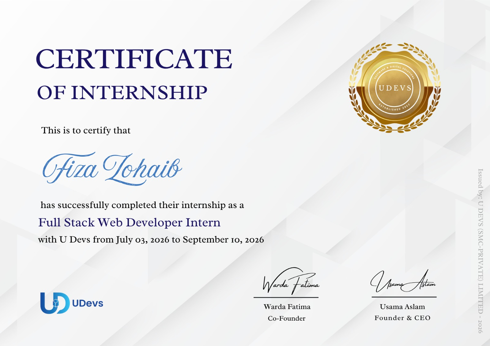

Internship completed
Full Stack Web Developer Intern
U Devs (SMC-Private) Limited
July 3, 2026 – September 10, 2026
The certificate provided confirms completion of an internship in the Full Stack Web Developer Intern role. This experience is part of my professional learning journey in web development.
This description stays within the role and dates shown on the certificate. Add specific technologies or responsibilities only if they accurately reflect your internship.
Internship certificate
Click the certificate to view it at full size.

Certificate of Internship · U Devs · 2026
View full certificate ↗